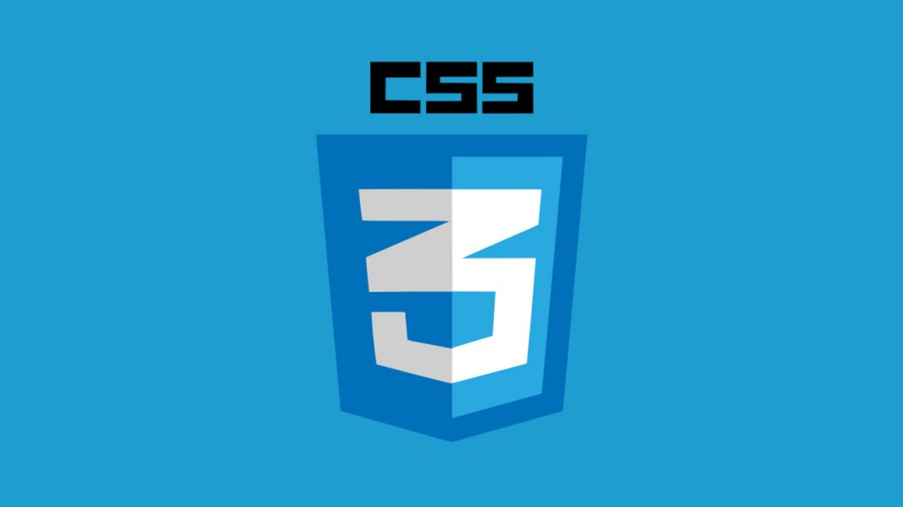

SADDAN BIMA NAGANTARA


BELAJAR CSS
CSS (Cascading Style Sheet) adalah salah satu bahasa desain web (style sheet language) yang mengontrol format tampilan sebuah halaman web yang ditulis dengan menggunakan penanda(markup laguage. Biasanya CSS digunakan untuk mendesain sebuah halaman HTML dan XHTML, tetapi sekarang CSS bisa diaplikasikan untuk segala dokumenXML, termasuk SVG dan XUL bahkan ANDROID
Penggunaan CSS
Metode Pembuatan :
Untuk CSS eksternal yaitu dengan cara memanggil file css yang sudah di buat
ID SELECTOR DAN CLASS
MATERI CSS PDF
© 2019 Bima Nagantara